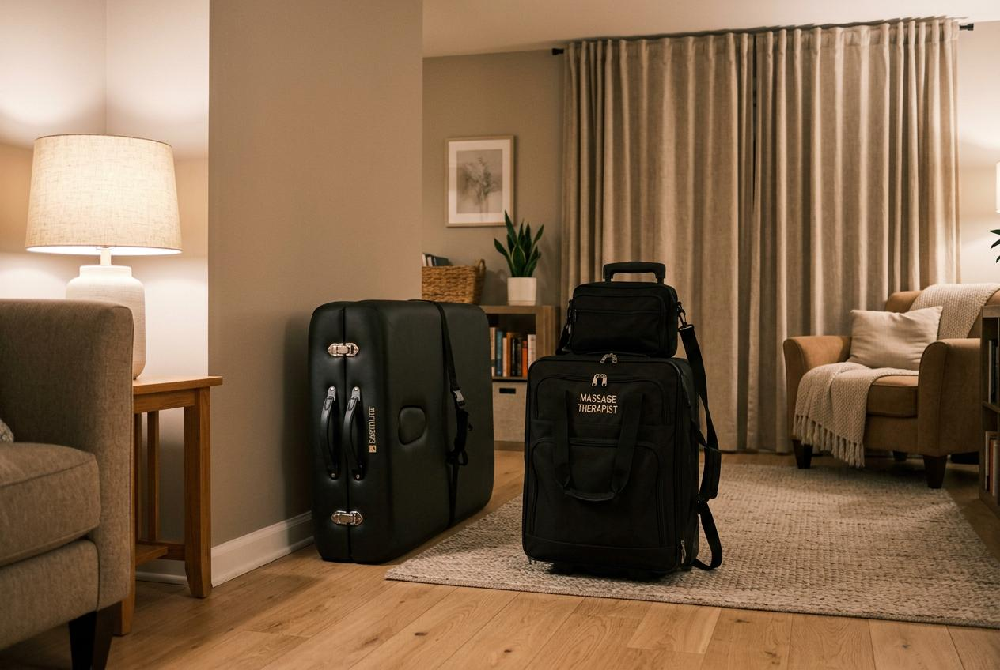

每天下班後肩頸僵硬、背部緊繃，是許多上班族的共同感受。長時間坐在電腦前，身體累積的疲勞需要適當的方式處理。選擇台北男士按摩時，建議先了解自己的需求，再決定適合的服務類型與時段，才能讓休息時間更有品質。
為什麼男士會選擇按摩服務？
下班後的身體狀態往往是決定是否安排按摩的關鍵。一整天維持固定姿勢工作，肩頸部位容易僵硬，背部也會感到沉重。這種累積性的身體疲勞如果長期忽略，可能影響睡眠品質與隔天的工作狀態。
許多男士選擇在下班後安排按摩，是因為這個時間點身體正處於需要放鬆的狀態。透過適當的按摩護理，可以幫助身體從緊繃轉為放鬆，讓晚上的休息時間更有效率。相較於週末才能處理，下班後直接安排是許多人的偏好。
台北男士按摩常見服務項目
下班後的按摩需求通常集中在放鬆緊繃部位，以下四種項目是較常見的選擇：
全身放鬆按摩：適合全身多處都有疲勞感的人，時間通常較長，能涵蓋肩頸、背部與腿部。
肩頸背部調理：針對上班族最常出現僵硬的部位，時間適中，適合下班後想要集中處理上半身緊繃的人。
腿部深層護理：適合長時間站立或走動的工作者，幫助腿部從一整天的負荷中恢復。
頭部放鬆護理：時間較短，適合下班後時間有限、想要快速轉換狀態的人。
台北男士按摩服務流程怎麼安排？
預約按摩服務的流程通常可以分為五個步驟。第一步是確認自己的需求與可安排的時間，建議預留至少一個半小時，包含交通與服務時間。第二步是選擇適合的項目，可以依據當天的身體狀況決定。第三步是透過電話或線上完成預約，確認地點與時間。第四步是在按摩師抵達前準備好環境，確保空間整潔且有足夠的活動範圍。第五步是服務完成後給予反饋，讓後續的體驗更符合個人需求。
台北男士按摩價格通常怎麼看？
價格會依據項目內容、服務時間與地點有所不同。一般來說，到府服務會包含交通成本，因此費用會略高於門市。建議在預約前確認報價包含的內容，避免後續產生誤解。
以下表格整理不同時段選擇的優缺點與適合對象，方便下班後想做安排的讀者參考：
| 時段 | 優點 | 考量點 | 適合對象 |
|---|---|---|---|
| 平日下班後 | 直接處理當天累積的疲勞，隔天狀態較好 | 時間較趕，需提前預約 | 下班後不想拖延的上班族 |
| 週末白天 | 時間充裕，不影響工作 | 累積一週的疲勞較深層 | 週間較難安排的人 |
| 週末晚上 | 隔天休息，可以較晚睡 | 預約較滿，需提早安排 | 想要完整放鬆的人 |
| 連假期間 | 可以安排較長的療程 | 熱門時段預約困難 | 想要深度休息的人 |

台北男士按摩推薦怎麼選？
選擇按摩服務時，建議從以下幾個面向評估。首先是口碑與評價，可以參考網路上的真實體驗分享。其次是服務內容的說明是否詳細，包括時間長度、涵蓋部位與價格結構。第三是預約流程是否順暢，能夠清楚確認時間與地點。第四是按摩師的專業背景與經驗，這直接影響服務品質。最後是後續的客戶服務，遇到問題時是否能獲得適當的處理。
到府按摩與門市按摩有什麼差別？
到府按摩的優點是節省交通時間，可以在自己熟悉的環境中接受服務，下班後直接在家等待即可。門市按摩則有專屬的設備與空間，氛圍較為一致。選擇哪一種方式，主要取決於個人的生活型態與偏好。如果下班後已經很疲累不想移動，到府服務是較為方便的選擇。
預約前需要注意哪些事項？
預約前建議先確認幾件事。第一，確認自己的身體狀況是否適合接受按摩，若有特殊情況應事先告知。第二，確認服務地點的環境是否適合，包含空間大小與隱私性。第三，確認價格與付款方式，避免現金準備不足。第四，確認取消或改期的規則，以應對臨時狀況。第五，確認按摩師的到達時間，預留緩衝時間避免延誤。
選擇按摩服務的重點整理
下班後安排按摩是處理身體疲勞的有效方式。選擇適合的項目與時段，能讓休息時間發揮更大效果。建議根據自己的工作型態與身體狀況，選擇全身或局部項目，並提前預約以確保時段。如果想要節省交通時間，到府服務是不錯的選擇。金手指按摩提供多元的按摩服務，歡迎有需求的讀者了解詳情，找到適合自己的放鬆方式。
常見問題
Q1: 下班後馬上按摩會不會影響效果？
不會。下班後身體正處於緊繃狀態，這時按摩反而能針對當天的疲勞直接處理。建議先簡單洗漱、換上寬鬆衣物，再開始服務，效果會更好。
Q2: 到府按摩需要準備什麼？
準備一個安靜、整潔且有足夠空間的區域即可。按摩師會攜帶所需的用品。建議準備乾淨的毛巾，並調整室內溫度與燈光，營造舒適的環境。
Q3: 按摩時間建議多久？
下班後若時間有限，60分鐘的肩頸背部調理即可。若有90分鐘以上，則建議全身放鬆按摩，涵蓋範圍更完整。
Q4: 預約後可以改時間嗎？
大部分服務都允許改期，但建議提前告知。具體的改期規則因店家而異，預約時應先確認相關條款，避免臨時變動產生費用。
Q5: 如何判断按摩師是否專業？
可以從溝通過程觀察，專業的按摩師會事先了解你的身體狀況與需求，並在過程中確認力道是否適中。服務後也會給予適當的休息建議。